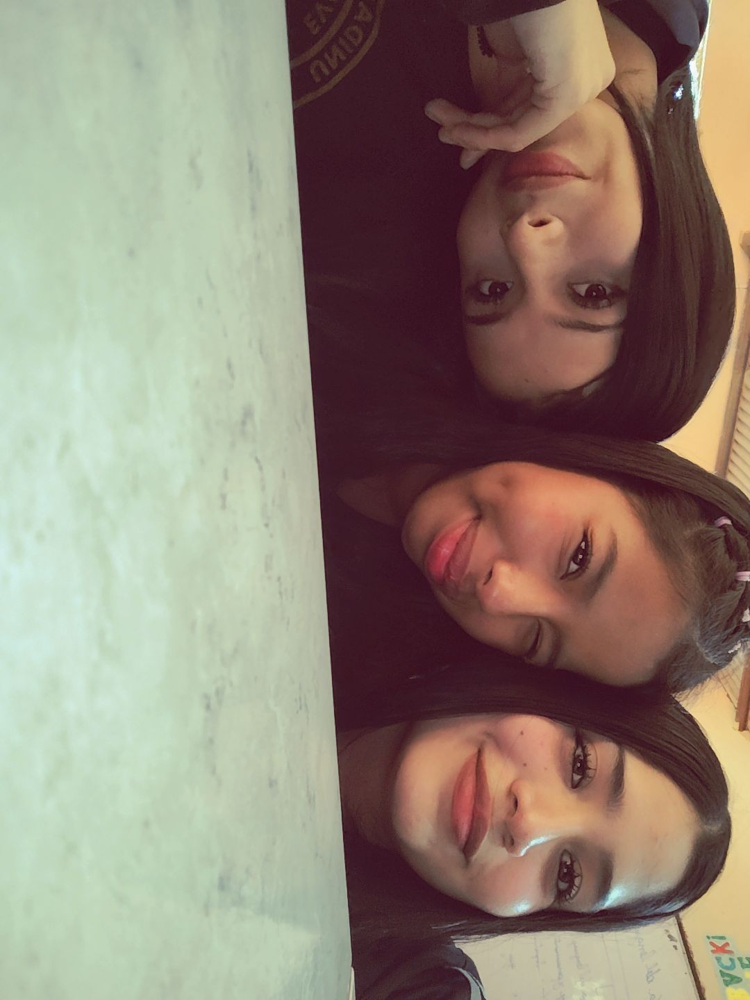
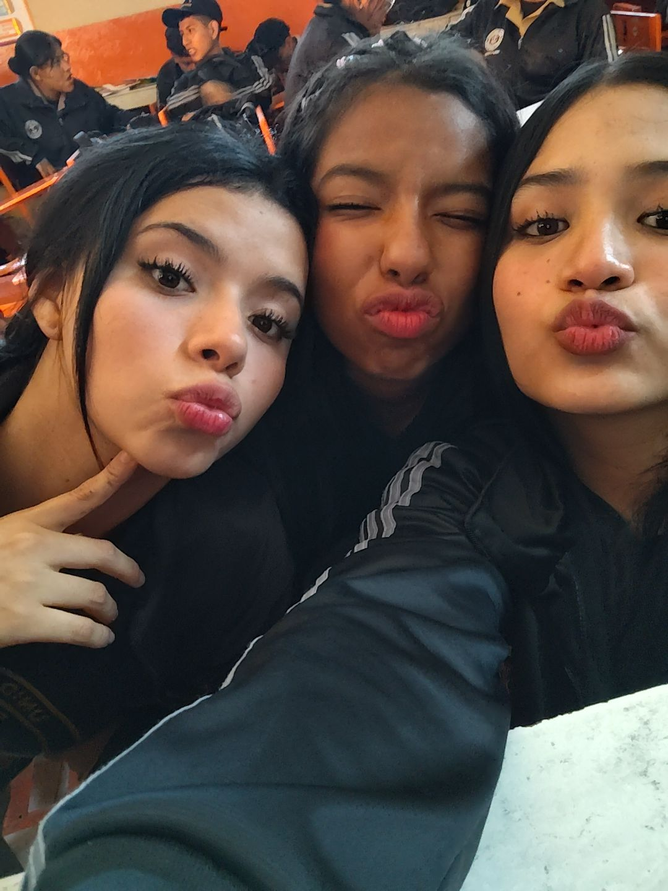
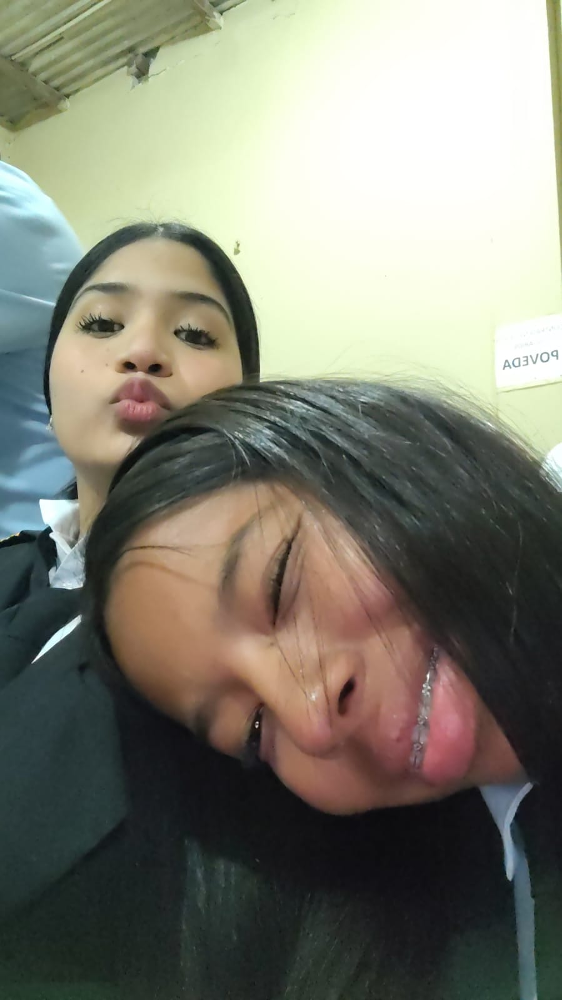

Tres chicas, una amistad y muchos recuerdos que guardar ??
Soy Diana y quise crear esta página para guardar un pequeño pedacito de nuestra historia. Aquí quiero contar cómo somos Cami, Yari y yo, y recordar algunos de los momentos que hemos compartido.
Para mí, una amistad está formada por confianza, risas, conversaciones, diferencias, aprendizajes y muchos momentos que poco a poco se convierten en recuerdos especiales.
Cami es una persona muy chistosa, noble y respetuosa. También es bastante resentida y un poquito inmadura, pero tiene un corazoncito de niña pequeña que la hace ser especial. Con ella tengo mucha confianza y hemos compartido muchos momentos que recuerdo con cariño.
Yari es una persona más cerrada y desconfiada. Puede parecer un poco fría o amargada, aunque también tiene su lado risueño. Cuando está de buen humor le gusta molestar, ayudar y compartir con las personas que quiere. No confía fácilmente en todo el mundo, y eso también forma parte de su manera de ser.
Yo soy Diana. Me considero una chica alegre y de buen corazón. Me gusta ayudar a los demás, confiar en las personas y abrirme con quienes siento que puedo ser yo misma. A veces he pasado por rupturas de amistad, pero también soy de las personas que saben perdonar y dar otra oportunidad.
Yo siento que la amistad es una de las cosas más bonitas que podemos encontrar durante el bachillerato. Entre clases, conversaciones, risas y momentos inesperados, vamos conociendo personas que poco a poco se vuelven importantes en nuestra vida.
Cami, Yari y yo somos diferentes, y justamente esas diferencias hacen que nuestra amistad tenga su propia historia. Cada una tiene una manera distinta de pensar, de sentir y de demostrar cariño.
No todo siempre ha sido perfecto. También hemos tenido desacuerdos, momentos incómodos y situaciones que nos han hecho pensar. Pero creo que cada experiencia nos ha ayudado a conocernos mejor.
Para mí, lo bonito de una amistad no significa que nunca existan problemas. Significa poder valorar los buenos momentos, aprender de los malos y guardar con cariño aquellas experiencias que vivimos juntas.
Con el tiempo, he aprendido que algunas personas llegan a convertirse en parte importante de nuestros días. Son aquellas con las que podemos hablar de cualquier cosa, reírnos de una ocurrencia o simplemente pasar un momento juntas.
Cami y Yari son dos personas que forman parte de mi historia. Cada una tiene una personalidad diferente, pero con las dos he compartido momentos que para mí tienen un significado especial.
Para mí, cada conversación, cada risa y cada recuerdo forma una pequeña parte de nuestra amistad. Tal vez no todos los momentos sean perfectos, pero todos forman parte de lo que hemos vivido.
A lo largo del tiempo también he tenido otras compañeras con las que me he llevado muy bien. Algunas amistades han sido bonitas y otras han terminado por diferentes razones. Cada experiencia me ha dejado algo que aprender.
A veces creemos que conocemos completamente a una persona y después descubrimos nuevas partes de ella. Eso me ha enseñado a observar las acciones, valorar la sinceridad y aprender a cuidar la confianza que doy a los demás.
Yo creo que no todas las amistades tienen que ser perfectas. Lo importante es compartir con personas que nos respeten, nos escuchen y nos permitan ser nosotras mismas. Por eso valoro los momentos que he vivido junto a Cami y Yari.
Aquí guardaré algunas fotos bonitas de Cami, Yari y yo, para recordar los momentos que hemos compartido. ??
?? Foto de las tres juntas

?? momentos felices

??otra foto especial
?? Más recuerdos

?? Aquí puedo colocar un video de nosotras
?? Aquí irá otro video
La vida está llena de personas que llegan para enseñarnos, acompañarnos y compartir momentos. Algunas se quedan durante mucho tiempo y otras dejan recuerdos que siempre podemos guardar.
Esta página es mi pequeño recuerdo de una amistad especial y de todas las experiencias que hemos vivido durante nuestro bachillerato. Me alegra poder guardar aquí una parte de nuestra historia.
?? Con cariño, Diana ??